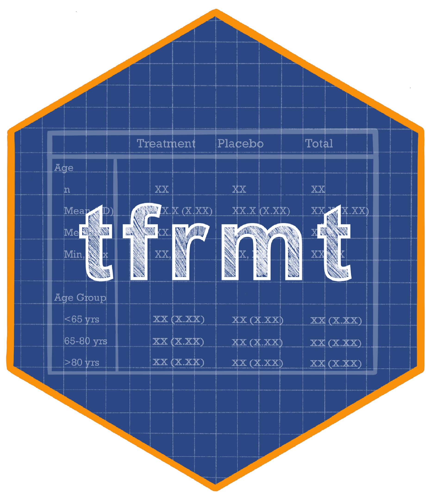

tfrmt 
The tfrmt package provides a language for defining display-related metadata, which can then be used to automate and easily update output formats.
In clinical trials, displays are generally quite standard, but frequent, highly specific formatting tweaks (e.g., rounding, footnotes, headers) are very common. Prior to data analysis, study teams often generate mock displays to represent the desired end product for sponsors to approve or programmers to replicate. This process is typically highly manual and separate from the programming itself. There is also a high importance placed on verifying the accuracy of the results via a QC (Quality Control) process such as double programming. Finally, there is a movement toward an industry standard data structure for Analysis Results Data “ARD”, which means analysis results datasets will have consistent structures and column names. Specifically, the ARD is long, with 1 record per computed value. For more information about ARDs click here.
tfrmt supports a vision where:
- Mock displays are integrated with the programming workflow
- Results are QC’ed prior to formatting to reduce rework
- Standard formatting styles can be applied in as little as one line of code
- The ARD structure can be leveraged to accommodate a variety of tables
By reducing the amount of repetitive tasks, study teams can focus on the quality and interpretation of the results themselves.
Why tfrmt?
While there are many existing table-making packages in the R ecosystem, they typically fall into one of two categories:
- Table packages that perform analyses and format the results
- Table packages that format and output existing data
By design, tfrmt is more of the latter, as it is intended to be used after the results have been computed. What makes tfrmt unique, however, is that it offers an intuitive interface for defining and layering standard or custom formats that are often specific to clinical trials. It also offers the novel ability to easily generate mock displays using metadata that will be used for the actual displays. tfrmt is built on top of the powerful gt package, which is intended to support a variety of output formats in the future.
Installation
The development version of tfrmt can be installed with:
devtools::install_github("GSK-Biostatistics/tfrmt")Input data structure
We expect an input dataset that is long, with 1 record per computed value. Required columns include:
- [Optional] 1 or more group columns, containing grouping values
- A single label column, containing row label values
- 1 or more column columns, containing column values
- A single param column, which provides a label for distinct types of values
- A single value column, containing the computed, raw data values
- [Optional] 1 or more sorting_cols columns, containing numeric values to be used in the row ordering
Functionality
Here is an overview of what is possible with tfrmt:
- Create a “tfrmt” metadata object containing all formatting and labelling for the display
- Create mock displays based on existing sample data or no prior data
- ARD-standard compliant facilitates reuse and automation
Other benefits of tfrmt:
- Provides a tidyverse-friendly, pipeable interface
- Leverages gt as output engine, which allows for further customizations within gt itself
More Info
For more information about how to build your own tfrmt mocks/tables (like the one below!), please explore the vignettes.
Recorded Presentations and Shared Materials
R/Pharma 2022 Day 1: Christina Fillmore - Why do I spend all my life formatting tables?
R/Pharma 2023: Becca Krouse - Everyone’s Invited: A Case Study on Bridging the Usability Gap